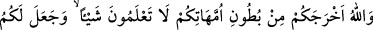
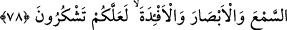

Çünkü muhabbette kemal ancak bu şekilde mümkün olur. Allah’ın ve Peygamberi’nin
(s.a.) emrine muhâlefet eden onlardan ayrılmış olur. Arada bu ayrılık varken onları
sevmesi nasıl mümkün olur?!
Şeyh Sa‘dî (k.s.) der ki:
Dost senin tarafına nâdir nazar eder
Senin yüzün düşmanın yüzüne bakar ise
Bilmezsin ki dost ayağını noksan kor
Sarayda düşman olduğunu görür ise
Sonra bilesin ki nefsin Rabbine dönmesi, nefsânî sıfatlarını yok edip Allah’ın
sıfatlarıyla hayat bulmasına bağlıdır. Nefsin sıfatlarını yok etmek ancak Allah’ın celal
sıfatlarının tecellîsi ile mümkündür. Allah’ın sıfatlarıyla hayat bulmak da Allah’ın
cemal sıfatının kulda tecellîsi ile olur. Allah bir kula tecellîde bulundu mu, onun için
artık zaman ve mekan kalmaz. Çünkü o, kendi varlığından fânî, Hakk’ın bakâsı ile
bâkîdir. Allah, dostlarını aziz kıldığı her türlü mevhibeleri vermeye kâdirdir. Ancak
anlayışı kıt kimseler, kendi akıllarıyla bu ma‘rifet ve kemâlâtı anlayamazlar. Hatta akl-ı
selim sâhibi olan kimseler bile sırf akıllarıyla bu hakîkatleri anlamaktan uzaktırlar.
Çünkü onlar aklın sınırını aşan konulardır.
Zayıf sel deryaya vâsıl olamaz
Tecellîler üç kısımdır: Birincisi, ilmî tecellîdir. Bu tecellînin ehli berzahlarda
kalanlardır. Böyle bir kimsenin mürşid olması sahih olmaz. Olsa olsa taklîden mürşid
olur. İkincisi aynî tecellîdir. Üçüncüsü, Hakkî tecellîdir. Bu son iki tecellîye mazhar
olan kimseler, yakîn ve vusûl ehlindendirler. Bütün mertebelerde, yâni tabîat, nefs, kalb,
tarîkat, ma‘rifet ve hakîkat mertebelerinde insanları irşada ehildirler. Onlar Allah
Teâlâ’nın şu sözünde işâret buyrulan basîret ehlidirler: “De ki: İşte benim yolum
budur. Allah’a basîretle davet ederim. Ben ve bana uyanlar da...” (Yusuf, 12/108)
Sen başkalarına değil, onlara tâbî ol. “İkinci ve üçüncü tecellî ehli arasında ne fark
var?” diye sorarsan, derim ki: Onların her biri, kutb-i irşad olmakta müşterek olduktan
sonra, üçüncüsü en üst mertebe olan kutbiyyet-i kübrâ (en büyük kutubluk) ile
diğerinden ayrılır.
78. Siz, hiçbir şey bilmezken Allah, sizi analarınızın karnından çıkardı;
şükredesiniz diye size kulaklar, gözler ve kalpler verdi.
“Siz, hiçbir şey bilmezken Allah, sizi analarınızın karnından çıkardı” o zaman, ne
dünya ne âhiret işlerinden, ne de ruhlarınızın ruhlar âleminde bildiği şeylerden ve ne de